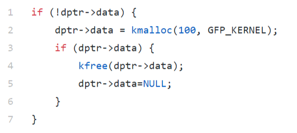
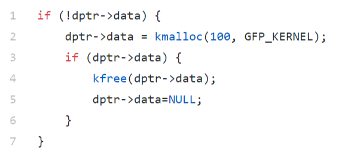
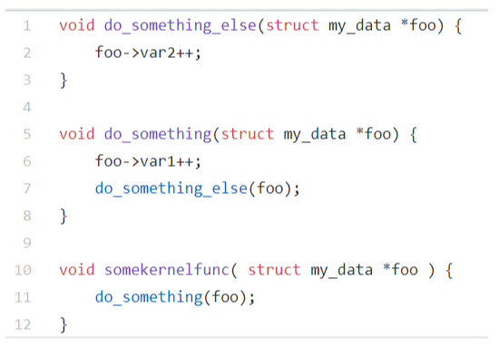

Select any true statements about the code block below, assuming dptr->data points to a location used in the write() operation of a driver accessed by multiple processes.

Select the appropriate locking to add to the code below, assuming dptr->data points to a location used in the write() operation of a driver accessed by multiple processes.

Typically a device driver allocates an object, then provides a reference to the kernel before initializing it.
References to objects provided to the kernel need to be tracked because device drivers must continue to honor requests as long as the object exists.
Processes may sleep while waiting for I/O to complete.
A kernel driver which needs to obtain a semaphore should use:
Interruptible versions of semaphore functions should be used:
A thread that takes a semaphore needs to call:
When designing a kernel driver, you should consider using a unique semaphore for each device if devices don't share common resources.
Reader/Writer semaphores allow one writer or an unlimited amount of readers to hold a semaphore
Reader/Writer semaphores are most useful when write access to a resource is more common than read access.
Completions are different from semaphores because completions are optimized for cases where the lock is available to be acquired.
Match the completion locking type to its best use:
Spinlocks are only needed if your code may run on a multiprocessor machine
You are writing code for a driver which needs to access a shared resource. While accessing the resource you need to allocate memory. Which locking primitive should you use?
You are writing code for a driver which needs to access a shared resource for a very brief period of time, during which you will not call any other kernel functions. Which locking type would be the best fit for this scenario?
The spin_lock_irqsave function should be used to acquire a spinlock..
Spinlocks differ from semaphores because spinlocks allow the processor to sleep while waiting for a lock.
The best strategy for designing a locking scheme is to wait for locking issues to appear in your driver, then debug them and add needed locks.
Select the true statement about the locking scheme which should be added to the code below to protect access to shared structure struct my_data via a single lock located inside the structure.

A properly designed circular buffer can be used without locks, even when two threads are using the buffer with one thread accessing for read and one thread accessing for write.
Operations on a single atomic value may require additional locking to safely access across multiple threads on some architectures.